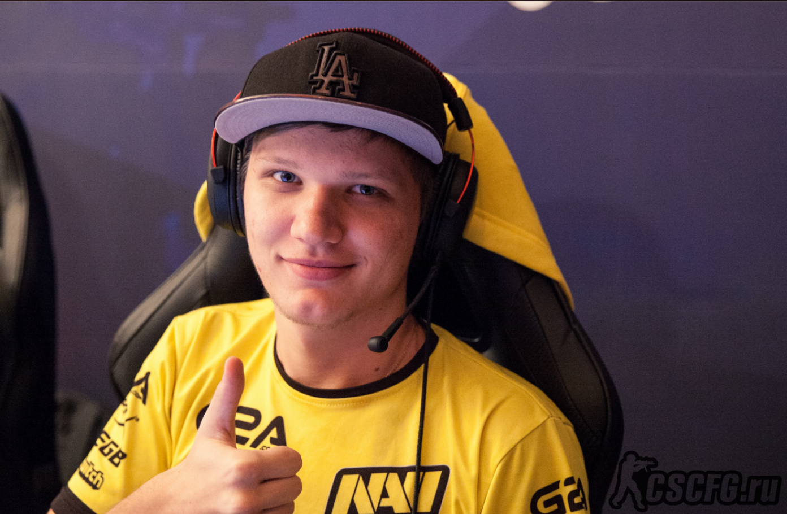

Александр Олегович Костылев (укр. Олександр Олегович Костилєв) (род. 2 октября 1997, Киев, Украина) — профессиональный украинский киберспортсмен, также известный как «s1mple». Играет в команде Natus Vincere. Лучший игрок 2018 года в дисциплине Counter-Strike: Global Offensive по версии портала HLTV.org[1]
Карьера Александра «s1mple» Костылева началась в 2013 году. s1mple побывал в таких коллективах как LAN DODGERS, A-Gaming, Courage Gaming. 1 февраля 2014 года s1mple получил бан от ESL на 2 года за читерство и попытку обхода бана. В результате игрок не смог выступать на официальных турнирах, которые поддерживаются Valve до 2016 года[2].В середине сентября Александр вступил в первый серьезный коллектив, HellRaisers, но через 5 месяцев покинул его, перейдя в FlipSid3 Tactics. Первой крупной международной победой в карьере игрока стал матч HellRaisers и Fnatic. В июле 2015 года s1mple покинул команду, объяснив, что берет паузу. Однако через 3 дня игрок начал игру в коллективе Evolution, который в свою очередь просуществовал один месяц. Поиграв за команду Worst Players, Костылев стал помогать своим бывшим командам, играя стендином за HellRaisers и FlipSid3 Tactics. В январе 2016 года s1mple присоединился к команде Team Liquid, с которой занял второе место на ESL One: Cologne 2016.
11 января 2017 года, стал лучшим в номинации «Момент года» по версии ESPN Esports Awards[5].
3 сентября 2018 года, по итогам голосования Stockholm International Esports Awards, был удостоен звания «Игрок года»[6].
12 ноября 2018 года, на церемонии вручения премии за главные достижения в области киберспорта Esports Awards получил награду «Киберспортсмен года на PC»[7].
20 января 2019 года становится лучшим игроком в мире за 2018 год по версии HLTV.ORG[1].
В команде Natus Vincere
В августе 2016 года Костылев возвратился на родину, подписав контракт с Natus Vincere[8] и заменив Даниила «Zeus» Тесленко. В составе Natus Vincere s1mple выиграл ESL One: New York 2016[9], стал серебряным призером Adrenaline Cyber League 2017, StarLadder i-League StarSeries Season 5[10]. 28 января 2017 года Natus Vincere покинула ELEAGUE Major 2017, проиграв в четвертьфинале команде Astralis со счетом 1-2 и заняв 5-8 место[11]. 19 июля 2017 года Natus Vincere с разгромным счетом 1-3 выбыла из турнира PGL Major Krakow 2017, заняв 12-14 место[12]. 28 января 2018 года Natus Vincere стала бронзовым призером ELEAGUE Major 2018, уступив в полуфинале команде FaZe со счетом 0-2[13]. В одном из интервью s1mple сказал, что никогда не покинет Natus Vincere[14]. Но в марте 2018 года, по инсайдерским данным[15], команда SK хотела выкупить Костылева и его товарищa по команде Егора Васильевa, но сделка так и не свершилась из-за цены в 1 млн долларов.[16] 23 сентября 2018 года команда Natus Vincere стала серебряным призёром FACEIT Major 2018, уступив в финале команде Astralis со счетом 0-2[17]. 3 марта 2019 года Natus Vincere заняла также 3-е место на IEM Katowice 2019, проиграв в полуфинале команде ENCE со счетом 1-2[18].